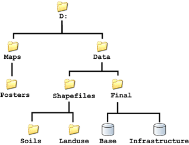
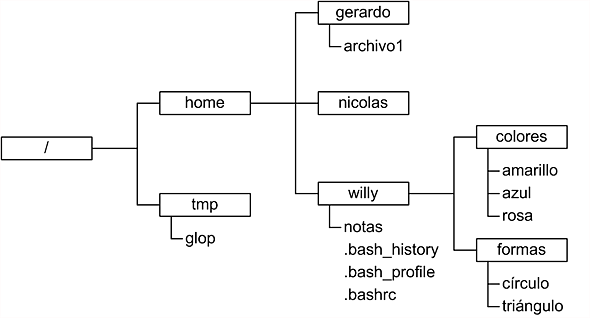

Un fichero se caracteriza por estar formado por la ruta en la que está almacenado, el nombre y una extensión, siguiendo este orden. Además, tenemos que tener en cuenta que no podrán existir ficheros con el mismo nombre, ruta y extensión. Para que sean únicos, el nombre o la extensión en la misma ruta deben ser distintos.
{kind=link}
Para tener acceso a un fichero determinado, se utiliza una ruta (o también la podemos nombrar path) que indica la ubicación de ese fichero en nuestro sistema. La ruta está compuesta por diferentes niveles jerárquicos (carpetas) separado por un símbolo barra /, Aunque en Windows, para separar los niveles jerárquicos, se utiliza la contrabarra o \. En cambio, en Unix el separador será /.
Si queremos definir la ruta independientemente del sistema operativo, podemos realizarlo de este modo:
//Ejemplo con la ruta directa al string
File archivoNoseguro = new File("carpeta/ejemplo.txt");
//Ruta que asegura el separador correcto segun plataforma
File archivo = new File("carpeta"+File.separator+"ejemplo.txt");
La carpeta principal que contiene el resto de carpetas se denomina carpeta raíz.
Existen dos tipos importantes de rutas que nos serán muy útiles en la gestión de ficheros:
- Ruta absoluta: se conoce como la ruta desde la carpeta padre.
- Ruta relativa: es aquella que coge como referencia el directorio actual para dar la ruta.
La diferencia entre la ruta absoluta y la relativa es que no se indica la carpeta padre u origen sino un punto, una barra y el nombre de los diferentes directorios separados por barras.
Usando la imagen anterior, para acceder a la carpeta Posters se podría hacer de las siguientes maneras:
- Ruta absoluta: D:\Maps\Posters
- Ruta relativa desde otra carpeta, por ejemplo:
- Maps:
.\Posters - Raíz:
.\Maps\Posters - Data:
..\Maps\Posters
- Maps:
Observa que si nos encontramos en la carpeta DATA, para acceder a Maps desde allí, debemos retroceder un nivel (dos puntos seguidos ..) para situarnos en el raíz y continuar desde allí.
Estos ejemplos se pueden realizar en Linux teniendo en cuenta que:
{kind=link}
- el directorio raíz no es una unidad marcada con una letra, sino /.
- los ficheros no tienen extensiones.